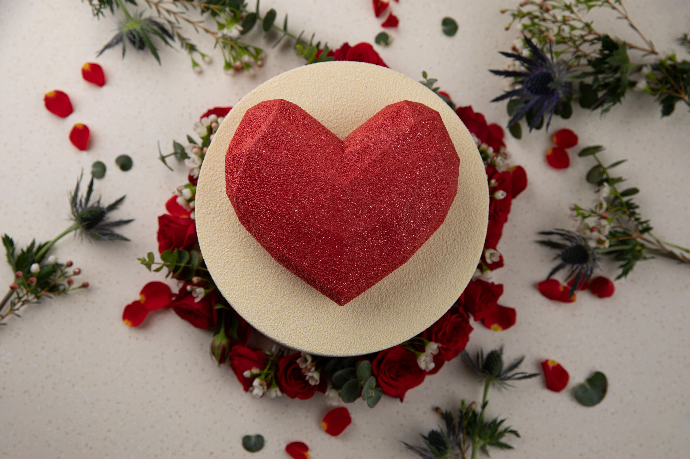
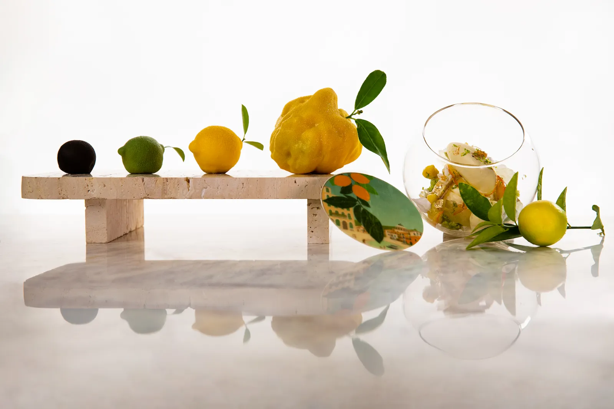
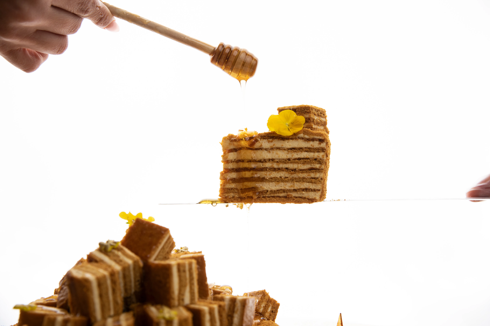

01
Inspiration
Concepts begin with emotion, texture, and the memory they leave.
Culinary R&D Experience
Crafted by Yahya Sleiman
Culinary R&D • Wellness • Artistic Food

Refined culinary direction for wellness-led, guest-ready experiences.
Taste, plating, and visual story.
Wellness without losing pleasure.
Tested, refined, ready to scale.
Built for guests, brands, and growth.
Our Philosophy
Every concept begins with meaning and becomes an experience worth remembering.

Concepts begin with emotion, texture, and the memory they leave.

Smarter choices shaped with pleasure, balance, and care.

Creativity gains value when lifestyle, service, and market needs meet.
Signature Creations

Signature Experience
A concept shaped into atmosphere, hospitality, and memory.


Culinary Universe
An elegant world of craft, research, and market sense.
 Artistic Direction
Artistic Direction
 Wellness Vision
Wellness Vision
 R&D Method
R&D Method
 Market Thinking
Market Thinking
Operational Consulting
Menus, kitchens, teams, costs, safety, and flow.
Clear systems. Safe flow. Team readiness.
Concept Development
Story, taste, design, and execution — refined for market launch.
Define audience, occasion, emotion, and wellness intent.
Balance aroma, acidity, sweetness, texture, mouthfeel, contrast, and finish.
Shape plating, color, proportion, and presentation rhythm.
Refine cost, consistency, flow, and team execution.
Recognition & Influence
Media, competitions, leadership, and signature work — presented with quiet confidence.
Recipe Blueprint
A disciplined framework for concept, ingredients, wellness, cost, production, and quality.

Culinary R&D • Wellness • Art direction.
Contact & Collaborations
Open to innovation, wellness, hospitality, brand, and international collaborations.